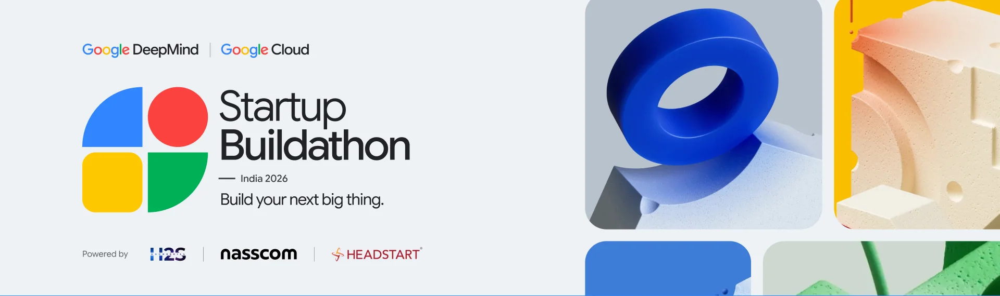
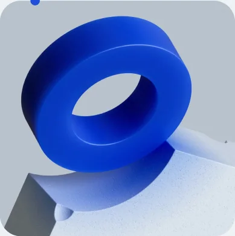
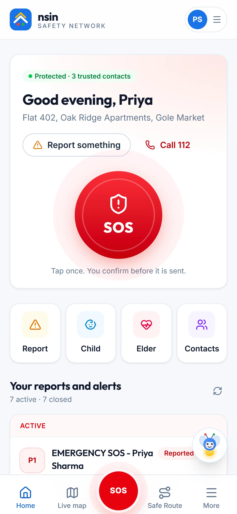
| What matters in an emergency | NSIN | Gate apps MyGate · NoBrokerHood |
112 India official app |
Family apps Life360-type |
WhatsApp society group |
|---|
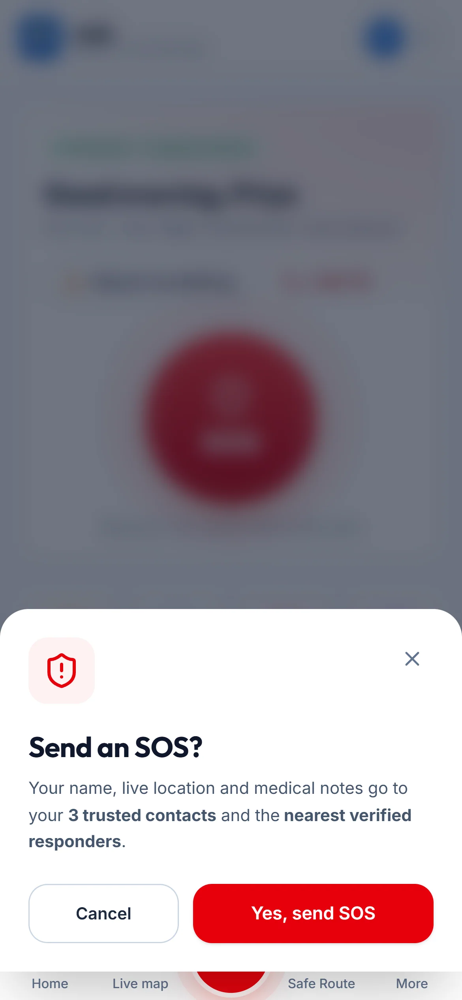
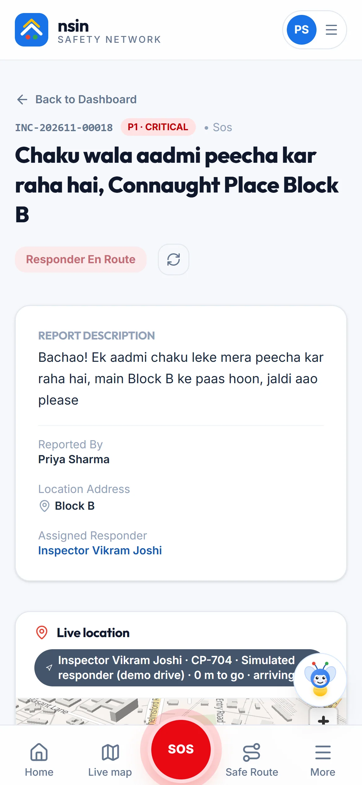
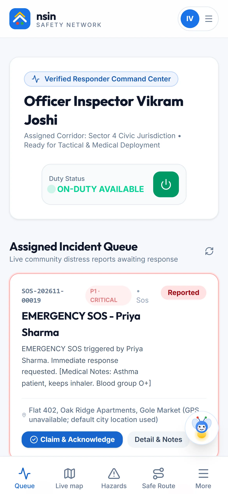
| Paying societies | 10 | 50 | 200 |
| Revenue / month | ₹60k | ₹3.0 L | ₹12 L |
| Cloud + Gemini | ₹4k | ₹8k | ₹23k |
| Support staff | ₹15k | ₹75k | ₹3.0 L |
| Gross margin | 68% | 72% | 73% |
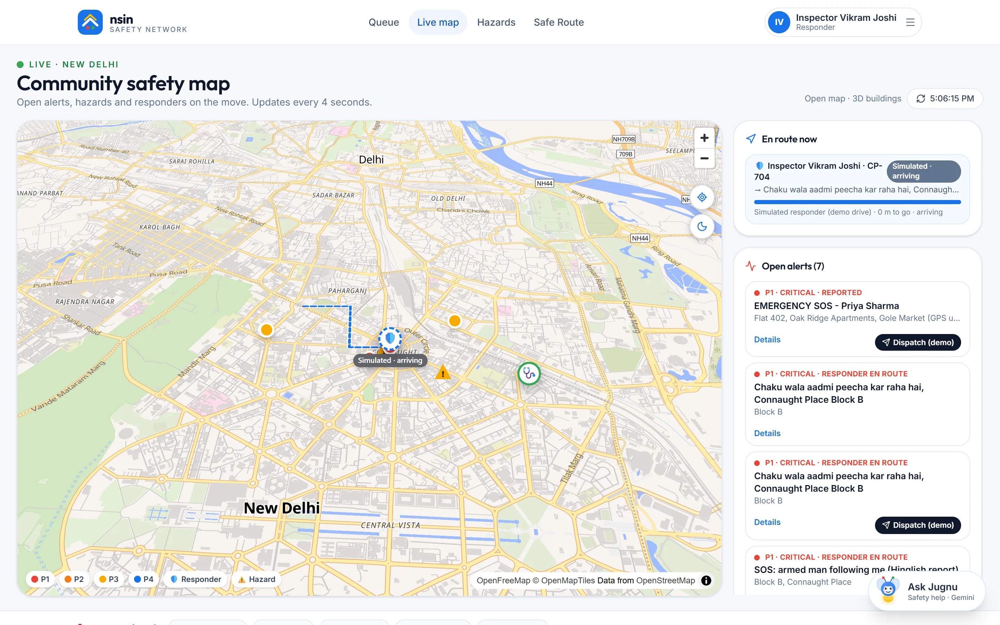
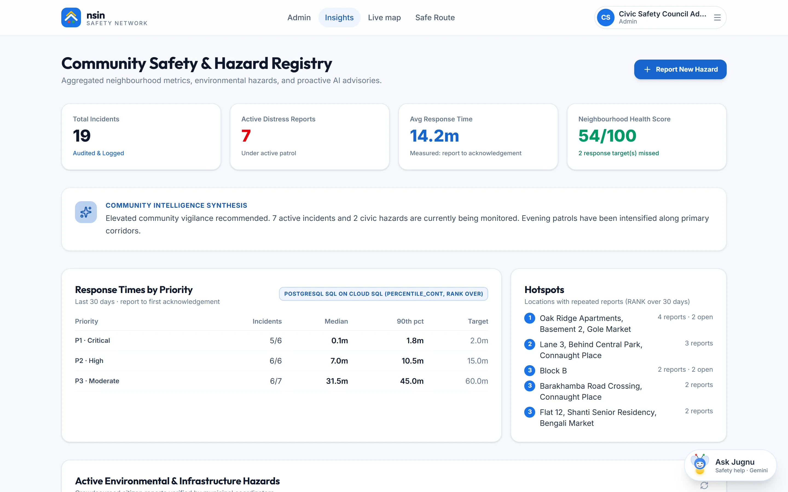
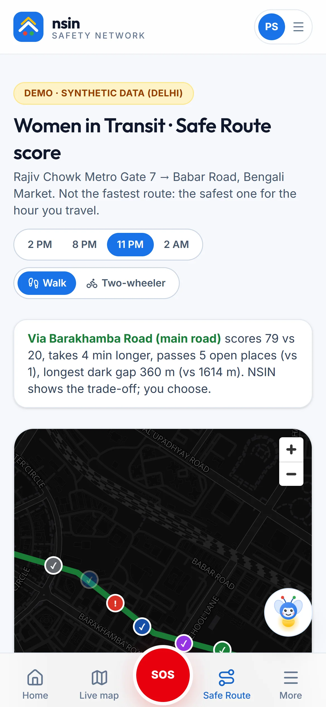
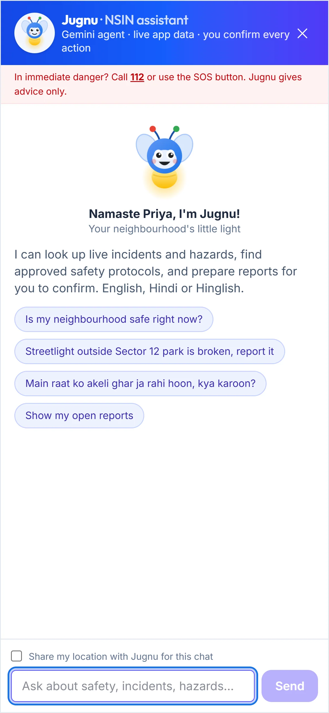
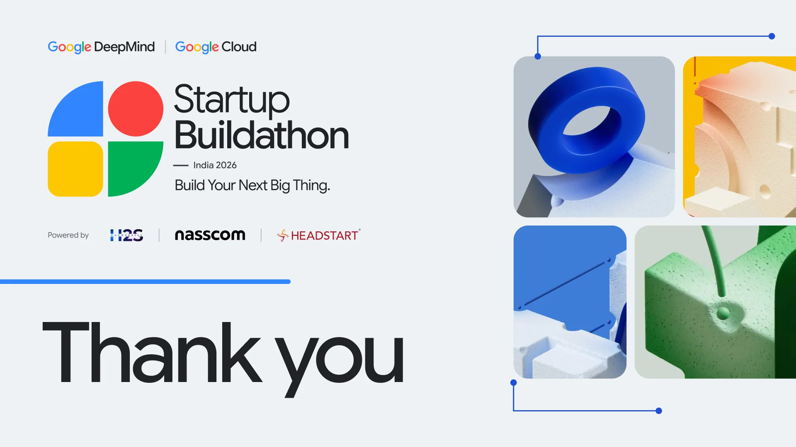
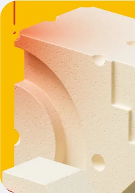